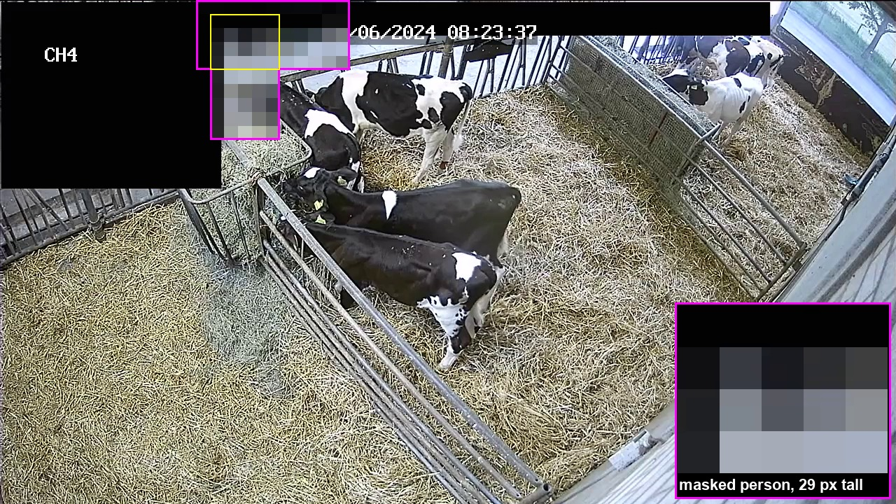
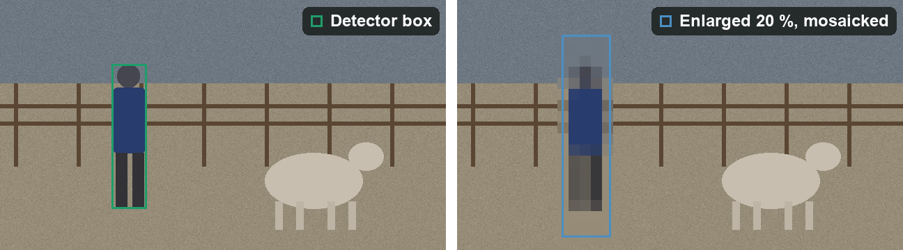
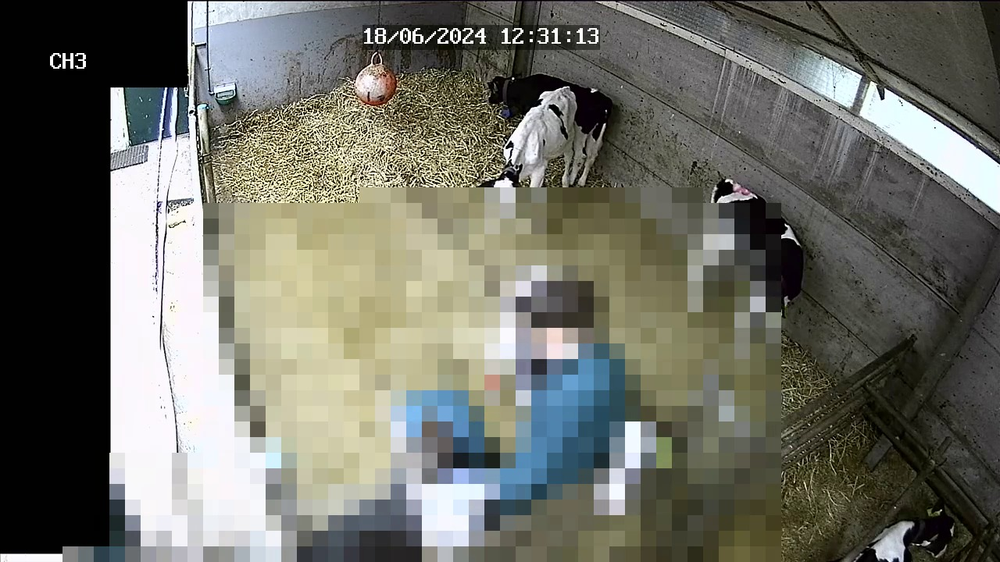
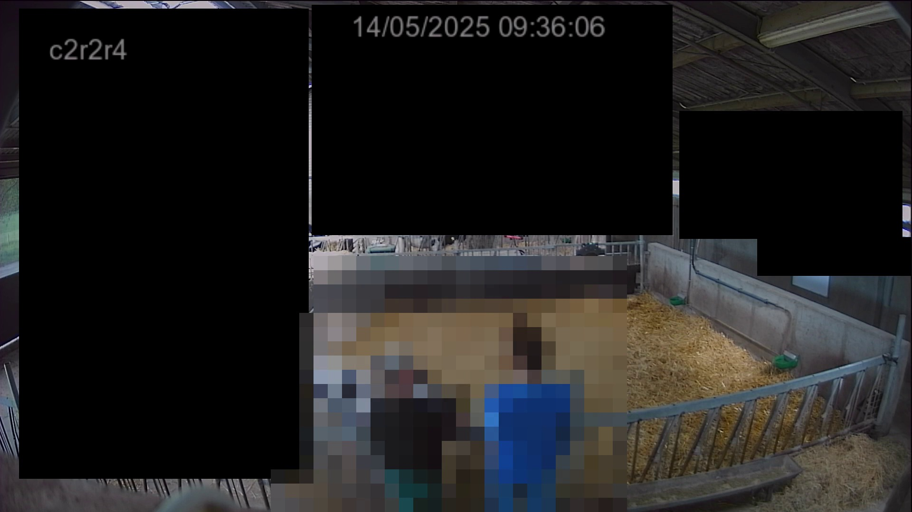
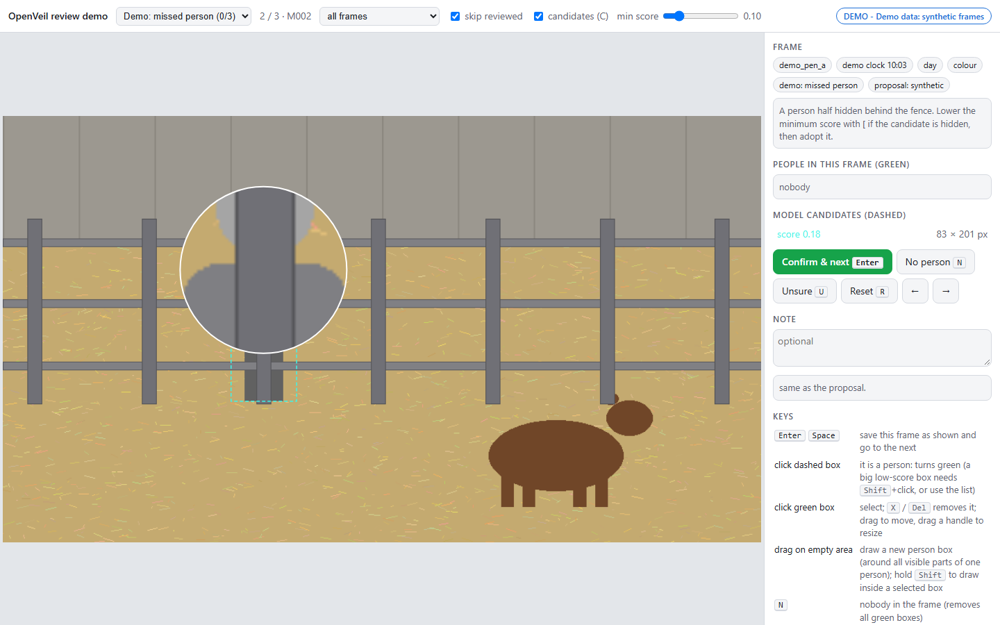

OpenVeil 1.1.0 · arXiv preprint forthcoming
Share your video dataset, not the people in it
OpenVeil: detect, verify and mosaic people in video datasets before release, with an interactive human review tool.
Video from farms, factories and laboratories is worth sharing, but it also shows staff and visitors, who have to be hidden first. Face blurring does not hide people who are seen from above, from behind, or only as a pair of boots behind a wall. A single detector either misses people or covers what you want to show (in our case study, the calves). In OpenVeil a detector proposes person boxes broadly, a classifier checks each one, and a person reviews the frames most likely to be wrong; the people are then covered by a mosaic.
Tested so far on one case study: 1,173 videos (50.8 million frames) of calf barns on two dairy farms. There it covered all 172 people in the human-checked test frames, with a false box on 3.3 % of frames.

All five figures are from the case study. People missed by both the pipeline and the reviewer are not counted. The measures and their caveats are under Results.
Why it is needed
Cameras on farms, in factories and in laboratories record far more than one study uses. That footage is worth sharing: with labels it trains behaviour and event detectors, and without labels it pre-trains video models. Four things stand in the way.
- People are in the picture. Staff and visitors walk past the camera. Images of identifiable people are personal data under the EU General Data Protection Regulation (GDPR), and someone who walks past a barn or factory camera has rarely agreed to appear in a public dataset.
- Face blurring does not hide them. People at work are seen from above, from behind, or only as a pair of boots behind a wall. In the case study a face detector found a face for only 66 of 172 people. A person can also be recognised by body, clothing and surroundings.
- One detector is not enough. A whole-body detector has one setting, its score threshold. With a high threshold it misses people who crouch or are half hidden. With a low threshold it puts mosaics on what the footage was recorded to show: in the case study the calves, in a factory probably the machines.
- Nobody can check every frame. At 0.6 s per frame, looking once at the 50.8 million frames of the case study would take more than 8,000 h.
OpenVeil is meant for any footage in which people have to be hidden and something else is the subject: farms, factories, laboratories, warehouses, wildlife cameras. So far it has been tested on one case study, calf barns on two dairy farms. Every figure on this page comes from that case study, and we have no results for other kinds of footage. The released verifier weights were trained on calf-barn footage only, so other footage needs its own reviewed frames and its own threshold.
How it works
Propose broadly, then verify. OpenVeil does not rely on one detector to make perfect predictions. A detector proposes person boxes at a low threshold, so that almost no person is missed. Many of its proposals are then not people (in the case study, many are calves). A classifier looks at each proposed crop and keeps only the people. A person reviews the frames where the pipeline is most likely to be wrong.
In the case study, OpenVeil covered all 172 people of the test set and put a false box on 3.3 % of frames. Grounding DINO alone, with its threshold raised until it also had a false box on at most 3.3 % of frames, covered 71 of the 172. The detector's score does not separate people from the other candidates well (AUC 0.713, where 1 is perfect and 0.5 is chance); the verifier's score does (AUC 0.994).
![The pipeline in eight steps. On a GPU, once per video: videos, a scan schedule, and then steps 3 and 4, which are marked as a pair with the label 'A detector proposes broadly, then a classifier verifies each candidate'. Step 3, the Grounding DINO proposer, makes every box that scores at least 0.05 a candidate. Step 4, the DINOv3 ViT-L/16 verifier with a LoRA adapter, keeps a box only if p(person) is at least 0.10. Without a GPU: one box table per video, the review tool, mosaic with smart cut, and a release in which each file is checked against its source.](assets/pipeline_narrow.svg)
1. Detect, on a GPU
The detector checks one frame per second; when it finds a person it goes back and scans every 0.2 s, until 2 s pass without one. Grounding DINO proposes boxes, and every box that scores at least 0.05 is a candidate. The verifier, a DINOv3 ViT-L/16 with a LoRA adapter, keeps a candidate when p(person) ≥ 0.10. Each video gets one small box table; the pixels are not touched.
2. Review, on any laptop
The review tool builds queues of frames where errors are likely: the largest mosaics, frames in which a very large box was dropped (the giant rule, step 3), random frames, and candidates just below the verifier threshold. A reviewer corrects the boxes with the mouse and a few keys, and the corrections are exported as an overrides file.
3. Apply, on a CPU
The giant rule drops a box that covers at least 55 % of the image and contains at least two smaller boxes; such a box would otherwise blank most of the frame. Each remaining box is enlarged by 20 % per side and is also applied to the frames within 2 s before and after it (the hold), because a person is not detected in every frame in which they are visible. Every grid cell that touches a box is filled with its mean colour. Only the groups of pictures (GOPs) that contain a masked frame are re-encoded; every other packet is copied unchanged. An automatic check confirms that each masked file has the same packet count and timestamps as its source and that every copied packet is byte-identical. Detection stored only boxes, so all of this can be changed and applied again without a GPU.

Every stage in detail: how it works. What we tried and why: design rationale.
Results
All results come from the case study: 1,173 videos (651 h, 50.8 million frames) of calf barns on two dairy farms, in colour by day and in infrared at night. The results use four sets of frames.
- Everyday sample
- 2,000 frames drawn from 118 videos from which no training frame was taken.
- Test set
- The 731 frames of the everyday sample in which one of the authors checked the proposals and drew a box round every person: 172 people in 52 frames. Rates measured on the test set are weighted so that they describe the whole everyday sample.
- Validation set
- 261 frames with 145 people, chosen to contain hard cases, so it is harder than everyday footage. Agents running a large language model (LLM) pre-labelled it, and one of the authors then reviewed every frame.
- Training set
- 3,004 frames from other videos, pre-labelled by LLM agents and all reviewed by one of the authors. The verifier was trained on it.
| Measure | Result | Measured on |
|---|---|---|
| People covered (≥ 90 % of their box under the mosaic boxes) | 172 of 172 | Test set |
| Frames with a false boxwith a big one, at least 15 % of the image: 0.45 % | 3.3 % | Test set, weighted to the everyday sample |
| Frame area under false boxes | 0.39 % | Test set, weighted to the everyday sample |
| People covered when the whole pipeline is run on videoscan schedule, hold and enlargement included | 140 of 145 | Validation set; the pipeline was run again on the stored model output of its source clips |
| Loose recall of the whole pipeline | 0.862 | Validation set, same run |
| Person-free frames that receive some mosaicthe mosaic takes 1.07 % of their area | 28.2 % | The 142 person-free frames of the validation set, same run |
| Detector calls per frame | 0.0508 | Whole dataset, clock policy: one check every 5 s at night |
| Video frames carrying a mosaicof the 1,106,110 still frames (JPEG) that the dataset also contains: 11.7 % | 6.8 % | Whole release |
| Video packets re-encodedall other packets were copied unchanged | 12.0 % | The 1,023 masked videos; the other 150 videos are byte-identical to the source |
| Masked videos passing the automatic check | all | The 1,023 masked videos |
| Human review3,194 frames with a logged decision; 0.6 s median per frame | about 2.4 h | Review log of one reviewer |
How to read these figures
- Definitions. A person is covered when at least 90 % of their box lies under the mosaic boxes, each enlarged by 20 % per side as in masking. A false box is a box with less than 20 % of its area on any one person. Loose recall counts a person as found when any box matches (IoU ≥ 0.5) a box drawn on any part of them.
- Single frames and whole pipeline. The test-set figures are a single-frame test: detector, verifier and box rules on each frame by itself. The validation figures add the scan schedule, the hold and the enlargement. The 28.2 % cannot be compared with the 3.3 %: it is measured on the validation set, which was chosen to contain hard cases, and after the hold and the enlargement, which also put mosaic on frames without people.
- The test-set boxes were not drawn independently. The reviewer drew them while checking the pipeline's own proposals, so a person missed by both the pipeline and the reviewer is not counted.
- The verifier scores on the test set are cross-fitted. Each test frame was scored by a model that had not seen its video but was trained on the other half of the test videos.
- The threshold was chosen with knowledge of the test set. The threshold of 0.10 was chosen after we had seen results on the test set.
- Infrared. No infrared frame of the test set shows a person, so coverage in infrared could not be measured.
- Not a zero miss rate. Covering all 172 people does not show that the miss rate is zero: the one-sided 95 % upper bound is about 1.7 % per person.
- The validation figures are not independent of the training data either. The released verifier was trained on other minutes of most of the same videos.
- Review time. The 2.4 h are the logged decisions. The tool writes a log line only when a frame is saved: 622 of the 3,004 training frames have one, and the other 2,382 needed no change. The review of the validation set is not in this log.
More detail: case study.
Single detectors compared with OpenVeil
At its lowest threshold Grounding DINO covered all 172 people of the test set, but then every frame had a false box. At a threshold high enough to bring its false boxes down to OpenVeil's 3.3 % of frames, it covered 71. Every detector we compared behaved in this way: it either left people uncovered or put false boxes on many frames. The table shows each method twice: at the threshold where it covered the most people, and at the threshold where it had a false box on at most 3.3 % of frames, as OpenVeil had.
| Method | Most people covered at any threshold, of 172 (share of frames with a false box at that threshold) | People covered when false boxes are limited to 3.3 % of frames |
|---|---|---|
| Face detector (RetinaFace), face box | 0 | 0 |
| Face detector (RetinaFace), body box drawn from the face | 34 (22.6 %) | 16 |
| YOLO11x, pre-trained on COCO | 137 (51.0 %) | 82 |
| YOLO11l, fine-tuned on the training set | 128 (5.0 %) | 126 |
| OWLv2, prompt "a person" | 142 (52.7 %) | 35 |
| LocateAnything-3B | 151 (50.9 %) | no score, so no threshold to set |
| Grounding DINO alone | 172 (100 %) | 71 |
| OpenVeil: Grounding DINO with the verifier at 0.10 | 172 (3.3 %) | 172 |
All methods were scored on the test set by the same rules as above; the bar shows the people covered out of 172. Each detector is shown at the threshold that covered the most people within the limit, chosen on the test set in its favour. The face detector found a face for 66 of the 172 people, but a face is a small part of a person and no face box covered anyone.
The comparison favours methods built on Grounding DINO: 168 of the 172 test-set boxes are Grounding DINO candidates that the reviewer adopted, so the 90 % rule is strict for detectors whose boxes have other shapes. The fine-tuned YOLO11l mostly misses parts of people, not whole people: at a threshold of 0.02 its boxes covered at least half of the box of 163 people. The training data favour the verifier as well: YOLO11l was fine-tuned on the labels before their review and saw no test-set video, whereas each cross-fitted verifier was trained on the reviewed labels and on half of the test-set videos. The earlier approaches and the development trials are in the design rationale.
Examples
Frames of the released, masked case-study dataset, shown with the data owner's approval. No unmasked person is shown. The last five frames come from three of the four recordings (FarmA_R3, FarmA_R2 and FarmB_R1) and include hard cases: small or partly visible people that the pipeline found and masked. In these five frames a human reviewer confirmed that every person is covered and did not have to add a box. Click a frame to enlarge it.







Review tool
The review tool is one web page, served by a small Python program on your own computer, so the frames never leave it. Green boxes are the people the pipeline proposes; dashed boxes are the model's other candidates with their scores. The aim is the same for every frame: each visible person has one box, and nothing else has one. Every save is written to disk at once. The recording below shows the corrections one after another.



| Key or action | What it does |
|---|---|
| Enter | The frame is right: save it and go to the next |
| Click a dashed box | Adopt the candidate as a person |
| Drag | Draw a new box, or move and resize a selected one |
| X | Delete the selected box |
| N / U | Nobody in the frame / mark the frame unsure |
| Hold Z | Magnifier |
Try it yourself with openveil review demo, which needs no GPU and no data. The demo opens with a few frames already reviewed; untick "skip reviewed" to see them too. The server listens on 127.0.0.1 only. The review folder holds unmasked frames: never share it. Full tutorial: docs/review_tool.md.
Get started
OpenVeil needs Python 3.10 or newer. Try the review tool first; it needs no GPU and no data.
git clone https://github.com/Sonam525/OpenVeil.git openveil && cd openveil
pip install -e ".[video,detect,review]"
openveil review demo # synthetic frames, http://127.0.0.1:8766Detection runs best on a CUDA GPU; --device cpu works but is slow. It needs two things that you fetch yourself: the gated DINOv3 ViT-L/16 base model, for which you accept Meta's DINOv3 License on its Hugging Face page and log in, and the verifier weights. Grounding DINO is downloaded automatically. Review and apply need no GPU. Then mask your own videos:
openveil detect videos/*.mp4 --out tables/ --config my_config.yaml --device cuda
openveil review build --tables tables/ --videos videos/ --out review/
openveil review serve review/ # http://127.0.0.1:8765
openveil review export review/ --overrides overrides.json
openveil apply video videos/cam1.mp4 --table tables/cam1.json.gz \
--out masked/cam1.mp4 --overrides overrides.json
openveil verify videos/cam1.mp4 masked/cam1.mp4The defaults are the evaluated case-study settings, including the Grounding DINO prompt worker. person. cow. calf. that the verifier was trained with; only the day/night policy differs (a full scan day and night). The prompt names the barn animals for two reasons: the detector can then label a box round an animal as cow or calf and not as a person, and the animal candidates served as examples of "not a person" when the verifier was trained. For other footage, change these two words.
Every command, still images and tar shards, a config file and the model-free trial run: docs/usage.md. Every setting: docs/configuration.md.
Other footage
The code and the procedure carry over to other footage. The released verifier weights are only a starting point there, because they were trained on calf-barn crops. For a new dataset:
- Run detection with the released verifier and the default policy,
always_full, which scans day and night in the same way. - Review the queues that OpenVeil builds: the largest mosaics, random frames and candidates just below the verifier threshold.
- If the review finds false alarms or misses, set a new verifier threshold (
verifier.threshold) on your reviewed frames, or train a new adapter on them (training took 35 min on one A10 GPU in the case study). How many reviewed frames another kind of footage needs has not been tested; the case-study verifier was trained on about 3,000 reviewed frames plus the 731 frames of the test set. - Apply the mask plan and the corrections, then have a person check a random sample of the masked frames.
For footage with other animals or with machines, replace cow and calf in the prompt (for example worker. person. horse.) and check the verifier on reviewed frames. Keep the frames you use to evaluate the verifier out of its training. The commands for each step are in docs/usage.md.
Weights
Built with DINOv3. The crop verifier of the case study, a LoRA adapter (rank 32) and an MLP head on DINOv3 ViT-L/16, is on the Hugging Face Hub as Sonam5/OpenVeil-Verifier-DINOv3-ViT-L16, under the DINOv3 License. The DINOv3 backbone is not included and no merged model is provided: download it yourself from Meta's gated repository. The verifier was trained on calf-barn footage only; for other footage it is a starting point.
from huggingface_hub import snapshot_download
snapshot_download("Sonam5/OpenVeil-Verifier-DINOv3-ViT-L16",
local_dir="weights/OpenVeil-Verifier-DINOv3-ViT-L16")| File | Content |
|---|---|
adapter_config.json, adapter_model.safetensors | LoRA adapter (PEFT format, rank 32), 56.7 MB |
head.safetensors | MLP head (1024 → 1024 → 512 → 2), 6.3 MB |
meta.json | Training recipe and preprocessing |
SHA256SUMS | Checksums of the four files above |
LICENSE, NOTICE | The DINOv3 License and the attribution |
Check the download with sha256sum -c SHA256SUMS inside that folder. Trained and checked with transformers 4.57.1 and peft 0.13.2; transformers 5 renames the DINOv3 modules, so OpenVeil requires transformers>=4.56,<5. Training data, metrics and limits: model card.
Licences
| Item | Terms |
|---|---|
| Code | Apache-2.0 |
| Verifier weights | DINOv3 License, published separately with a copy of it. Not Apache-2.0 |
| DINOv3 ViT-L/16 base model | DINOv3 License, gated with manual approval by Meta |
| Grounding DINO base | Apache-2.0, downloaded at run time |
| FFmpeg, x264, x265 | Reached through PyAV, which you install. Its wheels bundle FFmpeg linked with x264 and x265 (GPL-2.0-or-later). Not redistributed by OpenVeil; masked outputs are not GPL |
The DINOv3 License requires acknowledging DINOv3 in publications of results and restricts some uses, for example end uses prohibited by trade controls. Encoding H.264/HEVC may need patent licences for commercial use. Details: THIRD_PARTY.md. This is not legal advice.
Citing OpenVeil
Each OpenVeil release is archived on Zenodo, which assigns it a version DOI. Current release: 1.1.0 (2026-11-24; changelog).
DOI: 10.5281/zenodo.24505557. This concept DOI cites all versions and resolves to the latest one; the version DOI of each release is on its Zenodo record. Please cite the concept DOI, or the version DOI of the version you used (CITATION.cff). An arXiv preprint is forthcoming. Until then, please cite the software:
@software{yang2026openveil,
author = {Yang, Haiyu and Hostens, Miel},
title = {{OpenVeil}: Detect, verify and mosaic people in video datasets
before release, with an interactive human review tool},
version = {1.1.0},
year = {2026},
publisher = {Zenodo},
doi = {10.5281/zenodo.24505557},
url = {https://github.com/Sonam525/OpenVeil},
license = {Apache-2.0}
}
@misc{simeoni2025dinov3,
title = {{DINOv3}},
author = {Sim{\'e}oni, Oriane and Vo, Huy V. and Seitzer, Maximilian and
Baldassarre, Federico and Oquab, Maxime and Jose, Cijo and
Khalidov, Vasil and Szafraniec, Marc and Yi, Seungeun and
Ramamonjisoa, Micha{\"e}l and Massa, Francisco and
Haziza, Daniel and Wehrstedt, Luca and Wang, Jianyuan and
Darcet, Timoth{\'e}e and Moutakanni, Th{\'e}o and
Sentana, Leonel and Roberts, Claire and Vedaldi, Andrea and
Tolan, Jamie and Brandt, John and Couprie, Camille and
Mairal, Julien and J{\'e}gou, Herv{\'e} and Labatut, Patrick and
Bojanowski, Piotr},
year = {2025},
eprint = {2508.10104},
archivePrefix = {arXiv},
primaryClass = {cs.CV},
url = {https://arxiv.org/abs/2508.10104}
}
@misc{yang2026calfplaydata,
title = {{Calf-Play-Behavior-Dataset}},
author = {Yang, Haiyu and Lesscher, Heidi and Liu, Enhong and Hostens, Miel},
year = {2026},
version = {1.2},
publisher = {Hugging Face},
doi = {10.57967/hf/11689},
url = {https://huggingface.co/datasets/Sonam5/Calf-Play-Behavior-Dataset}
}
@misc{yang2026calfplay,
title = {Video recordings and play behaviour annotations of group-housed dairy calves on two {Dutch} farms},
author = {Yang, Haiyu and Lesscher, Heidi and Liu, Enhong and Hostens, Miel},
year = {2026},
eprint = {2611.21706},
archivePrefix = {arXiv},
primaryClass = {cs.CV},
url = {https://arxiv.org/abs/2611.21706}
}- If you use the verifier weights, please also cite DINOv3 (arXiv:2508.10104, second entry above); the DINOv3 License requires acknowledging it.
- Case-study data: the Calf Play Behavior Dataset, version 1.2 (the masked release, made with OpenVeil; DOI 10.57967/hf/11689), described in a data descriptor (arXiv:2611.21706, under review at Scientific Data). Third and fourth entries above.